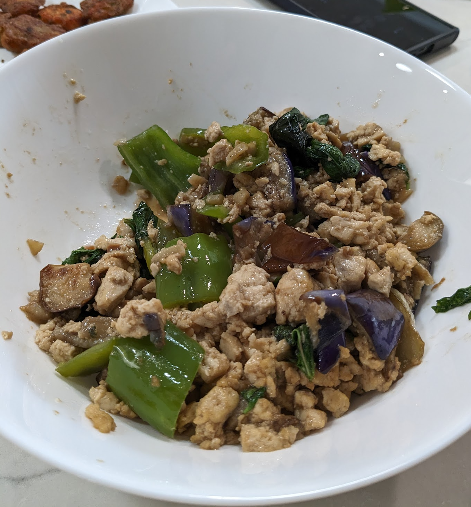

Thai Eggplant and Ground Pork

Ingredients
- 2 Japanese eggplant, cut into bite-sized pieces
- 1 lb ground pork
- 2 tbs soy bean paste
- 2 tbs oyster sauce
- 1 tbs fish sauce
- 1 tbs Maggi (seasoning soy sauce)
- 1 tsp sugar
- 7 cloves garlic
- 3 Thai chili
- 1 bunch basil
- 1 red bell pepper, sliced
Directions
- Soak the eggplant in salted water until ready to use
- Crush chili peppers and garlic in mortar and pestle
- Mix soy sauce, oyster sauce, fish sauce, sugar, and 2 tbs water and set aside
- Heat 2" oil in a pan until very hot, and shallow-fry the eggplant for 2-3 minutes until brown. Remove and set aside. This is a very important step and will help the eggplant maintain structural integrity when cooked with the pork.
- Brown chili-garlic paste in 2 tbs oil until fragrant
- Add the ground pork and break up with a spatula
- When the pork is half done, add the soy bean paste
- When the pork is fully cooked, add the sauce mixture, the bell peppers, and the eggplant and cook for 1-3 minutes
- Add the basil, toss to incorporate, then transfer to a serving dish
Chef's Notes
- Traditionally, this dish is made with Thai eggplant, which is small, green, and round. Since these
are more difficult to find, I adapted this recipe for the more available Japanese eggplant
- This dish can be made vegetarian by substituting firm tofu for the ground pork
- Cut the tofu into medium blocks and drain in a colander for 1-2 hours
- Make sure the wok is very hot before placing the tofu blocks
- Break up the tofu like you would for the ground pork. It will take a long time to release
all its water and begin browning, but patience pays off here
- You can also extend the tofu with coarsely chopped mushrooms. Brown them separately from
the tofu, as they also will take a fair amount of time to release their water and brown.
- This dish can be made vegan by using tofu and substituting mushroom sauce for the oyster
sauce
- I have used a poblano pepper instead of a red bell pepper and it was an addition I will make again
Michael Fritsche
mbf@fritsche.org